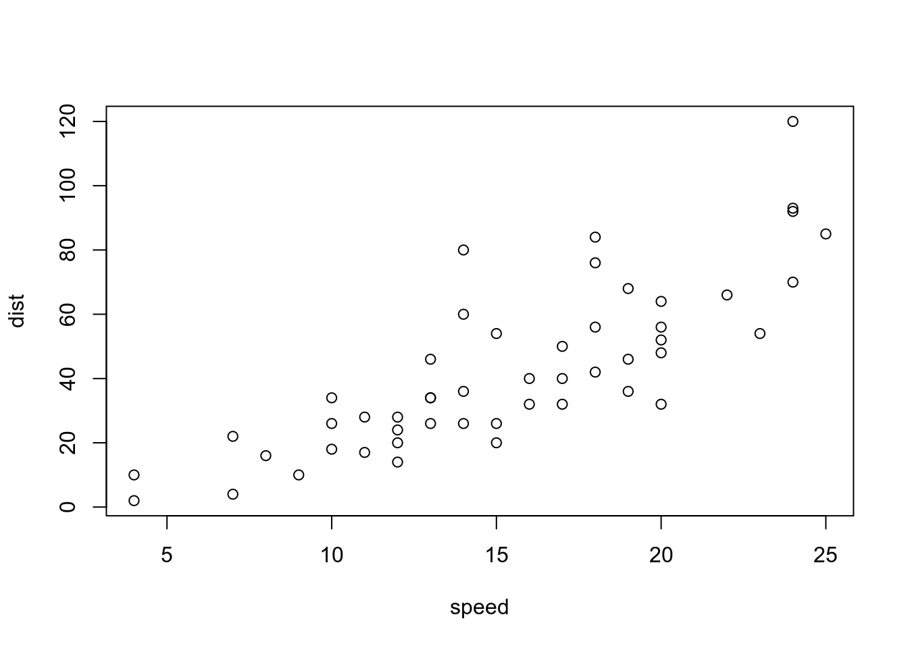
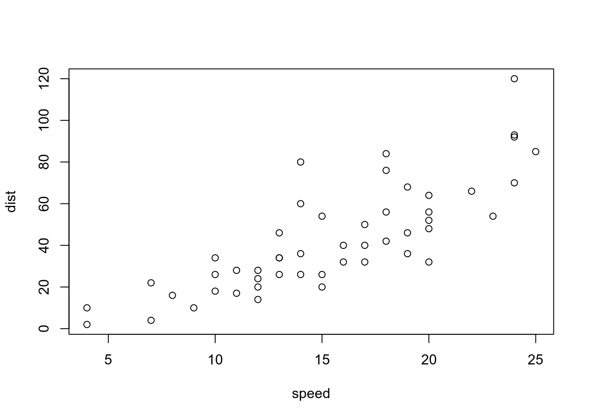

Formulario de Avaliação
0.1 Avaliação
Since Rmarkdown uses knitr and it loads automatically hyperref I think hat this should work.
In fact it is just a matter of use some commands of the hyperref package.

Since Rmarkdown uses knitr and it loads automatically hyperref I think hat this should work.
In fact it is just a matter of use some commands of the hyperref package.
